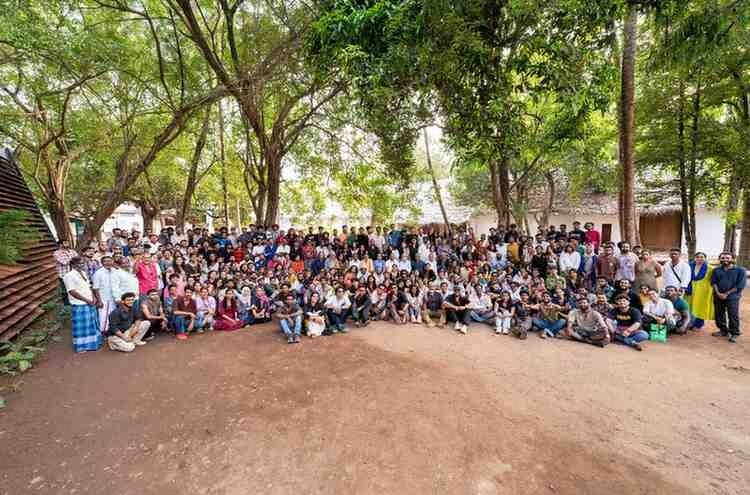

Festivals · Arts
Kochi-Muziris Biennale 2027-28 (7th edition)
- Dates
- Dates TBA
- Location
- Kochi, India
- Format
- In-person
- Category
- Arts
- Industry
- Contemporary art
- Organiser
- Kochi Biennale Foundation
- Official website
- https://www.kochimuzirisbiennale.org/
About
Curated by Kader Attia. Press reports an opening on 12 December 2027, but the official site gives no dates.
Topics: biennale, contemporary art, installation.
No organiser attendance figure found on the official pages fetched 24 Nov 2026. Ranked by our estimated size tier 'very large' (100,000+ attendees/visits), a judgement from format, venue and scale, not an official number.
Sources
- Official — https://www.kochimuzirisbiennale.org/